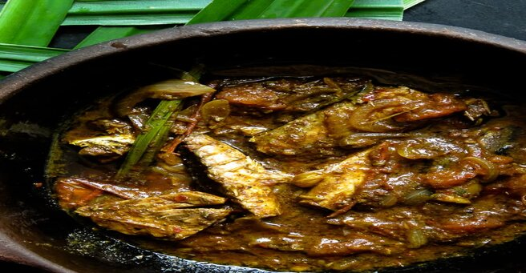

Sri Lankan Canned Fish Curry(Tuna curry).
If you have a few canned jack mackerel or salmon in your pantry and you are just about tired of making them into salads, well then, it’s time for you to try the Sri Lankan version of a hot and spicy salmon curry. The recipe takes your basic staples and cooks into a rich and tasty salmon curry in which you can dip into with your favorite type of bread or flatbreads. You can use this curry for breakfast, lunch and dinner.
INGREDIENTS
- 3-4 tablespoons of oil
- 1 large onion sliced
- 3-4 cloves of garlic sliced
- A handful of curry leaves
- 1-inch cinnamon stick
- A piece of pandan leaf
- 1 large tomato sliced
- 2 green chilies sliced
- 1/2 - 1 teaspoon of chili powder (Depending on your preference)
- 1/2 teaspoon turmeric powder
- 1/4 teaspoon pepper powder
- 1 teaspoon curry powder
- 1 cup of coconut milk
- 1 large can of jack mackerel/ salmon or tuna fish(use chunky variety that won’t melt while it simmers)
- salt to taste
DIRECTIONS
Open the can, drain the fish brine and set it aside. Place a pan over medium heat and pour in the oil(4tbs), leave it to heat for a minute. Add the curry leaves, cinnamon(1 inch), pandan leaf, stir and sauté for 1-2 minutes. Include the onions, garlic(4 cloves sliced) and tomatoes(1 large), green chilies(2) cook the ingredients for a further 2-3 minutes. Add the turmeric(1/2 tsp), red chili powder(1/2 to 1 tsp), pepper(1/4 tsp), curry powder(1 tsp) and sauté. Let the ingredients turn slightly brown and tomatoes soften while all of the ingredients turn to a semi-liquid paste. This will take less than 10 minutes, increase heat if necessary but avoid burning the paste. Reduce heat to low-medium and pour in the coconut milk(1/2 cup, add 1 cup if you need gravy). Leave it to slow simmer for another 5-7 minutes. Season with salt. Once the coconut milk is thick and slightly changes color, gently add the canned fish chunks into the gravy. Avoid stirring unless it is to place the fish so they cook evenly. Cover with a lid, set to slow simmer for 10-15 minutes or until the gravy is thick. Season with salt and serve warm.